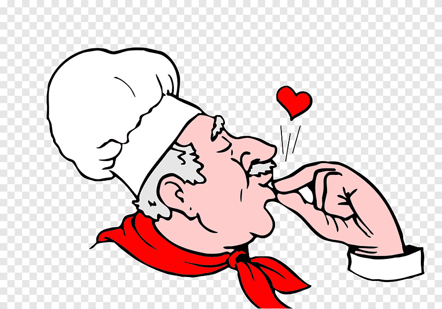

Welcome Food Lovers
The most well-liked Sri Lankan cuisine items are curries and rice. The staples of Sri Lankan food are unquestionably rice and curries, which are consumed by all two or three people per day. From the perspective of a stranger, it may appear monotonous, yet it's everything but. You will want to taste the dishes again and again since they are so wonderful and fragrant.
As a tropical island with an abundance of many kinds of vegetables, the meals contain varieties of vegan curriess. It is usually comprised of rice with 3 to 4 vegan curries. Local people usually prepare steamed white rice, but fragrant savory rice dishes are readily available to taste in Sri Lanka. There are many popular side dishes, you’ll definitely going to love them.

This website has been arranged to provide some understanding of Sri Lankan food for those of you who love food.